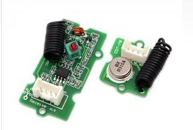
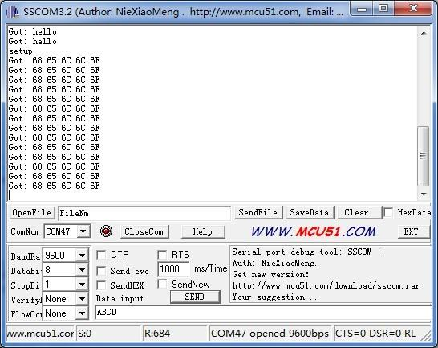

This kit is used for one way wireless communication at a frequency of 315MHz and includes a transmitter module and a receiver module. The Grove configuration of this kit allows for around 40 meters of transmitting distance indoors, or around 100 meters outside.
Model: WLS01051O

| Item | Min | Typical | Max | Unit |
|---|---|---|---|---|
| Working Voltage | 3.0 | 5.0 | 12.0 | VDC |
| Current | 3 | / | 10 | mA |
| Work Mode | ASK | / | ||
| Transmit Power(Max) | 15 | mW | ||
| Working Distance | 40 | / | 100 | m |
| Item | Typical | Unit |
|---|---|---|
| Working Voltage | 5 | VDC |
| Quiescent Current | 5 | mA |
| Receiver Sensitivity | -103 | dBm |
| Operating frequency | 315 | MHz |
The transmitter and receiver modules both rely on a single wire for communication. Though using the UART supplied by the Arduino platform can work, it is recommended, instead, to use the VirtualWire library which uses Amplitude Shift Keying for modulation which provides better communication.
Both the transmitter and receiver modules require three wires: Vcc, Ground, and signal. Both of pin 2 parts of the kit are not connected.
Note: The hardware installation can refer to the usage of the module Grove - 433MHz Simple RF Link Kit.
#include <VirtualWire.h>
//Grove - 315(433) RF link kit Demo v1.0
//by :http://www.seeedstudio.com/
//connect the sent module to D2 to use
#include <VirtualWire.h>
int RF_TX_PIN = 2;
void setup()
{
vw_set_tx_pin(RF_TX_PIN); // Setup transmit pin
vw_setup(2000); // Transmission speed in bits per second.
}
void loop()
{
const char *msg = "hello";
vw_send((uint8_t *)msg, strlen(msg)); // Send 'hello' every 400ms.
delay(400);
}
//Grove - 315(433) RF link kit Demo v1.0
//by :http://www.seeedstudio.com/
//connect the receive module to D2 to use ..
#include <VirtualWire.h>
int RF_RX_PIN = 2;
void setup()
{
Serial.begin(9600);
Serial.println("setup");
vw_set_rx_pin(RF_RX_PIN); // Setup receive pin.
vw_setup(2000); // Transmission speed in bits per second.
vw_rx_start(); // Start the PLL receiver.
}
void loop()
{
uint8_t buf[VW_MAX_MESSAGE_LEN];
uint8_t buflen = VW_MAX_MESSAGE_LEN;
if(vw_get_message(buf, &buflen)) // non-blocking I/O
{
int i;
// Message with a good checksum received, dump HEX
Serial.print("Got: ");
for(i = 0; i < buflen; ++i)
{
Serial.print(buf[i], HEX);
Serial.print(" ");
//Serial.print(buf[i]);
}
Serial.println("");
}
}

This is just a simple transmitter and receiver instance as a reference.
| Revision | Descriptions | Release |
|---|---|---|
| v0.9b | Initial public release | 03,Oct,2011 |
If you have questions or other better design ideas, you can go to our forum or wish to discuss.
Copyright (c) 2008-2016 Seeed Development Limited (www.seeedstudio.com / www.seeed.cc)